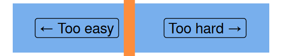
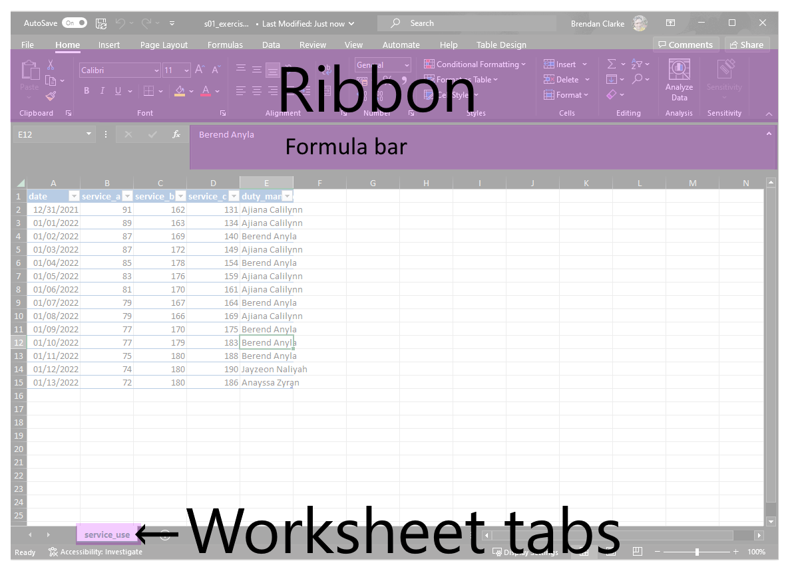
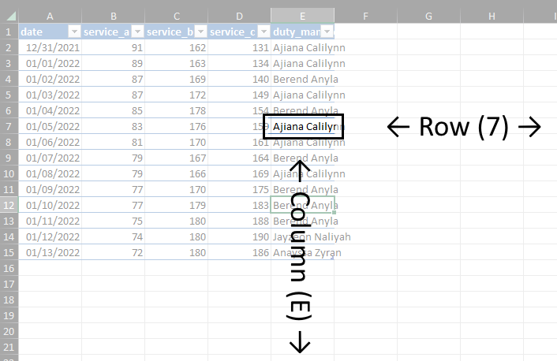
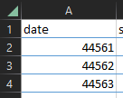
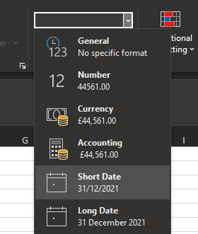
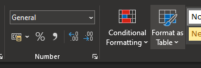
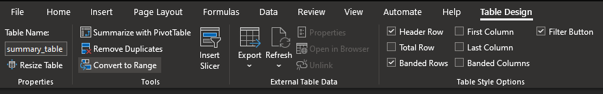
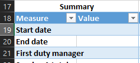
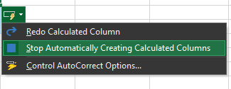
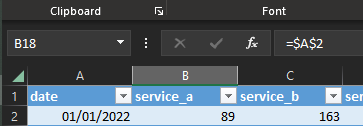

Excel foundations 1 (intermediate Excel session 1)
excel
intermediate
Excel skill-builder
This is a session in our intermediate-level Excel skill builder course. This consists of five practical training sessions, designed to be taken together, that are aimed at helping users with some prior Excel experience build and consolidate their skills. The sessions are:
- Excel foundations 1 (this session)
- Excel foundations 2
- Lookups in Excel
- Excel programming
- Pivot tables and pivot charts
NoteSession materials
Previous attendees have said…
- 132 previous attendees have left feedback
- 97% would recommend this session to a colleague
- 91% said that this session was pitched correctly

NoteThree random comments from previous attendees
- Great learning experience, the speaker was very knowledgeable and he was very easy to listen to and made the learning very enjoyable. He was also very good at making everyone feel and ease and encouraged people to participate, which we did. Looking forward to the next session!
- Was helpful and provided concise and clear information
- Very useful, but sometimes presenter is a bit too fast talking through bits for me to do at the same time on my spreadsheet, but presenter does repeat it again, which is good.
TipForthcoming session(s)
| Booking link | Date |
|---|---|
| Excel foundations 1 (intermediate Excel session 1) | 14:00-16:00 Thu 30th April 2026 |
Session outline
- most Excel questions can be broken down into these five areas
- Cells and formatting
- Ranges and tables
- References
- Formulas
- Functions
- we’ll look at cells, ranges, and references in this session
Tasks
- there are tasks throughout the training session
- they’re described in the green boxes
- please follow along with the tasks
TipTask
- this is the first step of the task
- this is the next step
Getting started
- this course is written for M365 Excel (desktop)
- other versions of Excel are available, and will work in a similar way
- files for today:
-
s01_exercises.xlsxis a starting-point for the exercises today -
s01_exercises_final.xlsxis the end-point for the exercises today - it’s there to help if you get stuck or lost
-
A first task
TipTask
- open the sample spreadsheet
s01_exercises.xlsxand have a look around - find the
service_useworksheet
Terminology

- worksheet / workbook distinction
-
Ctrl+F1to hide the ribbon
Keyboard shortcuts
- Excel is rich in keyboard shortcuts
- these shortcuts are a great way to build speed and fluency
TipTask
- Press
Alt - Try exploring the ribbon using the keyboard shortcuts
Cells and formatting
- Excel sheets are made up of cells
- each cell can contain either a value or a formula
- cells can be formatted
- sometimes that’s just text formatting, like size, colour, etc
- sometimes that’s number format, which changes the value in the cell
- formatting can be conditional, where formatting changes based on cell values. We talk about this in a later session
Rows and columns
- cells are arranged in rows and columns 
- columns usually have letters, and rows have numbers
Date task
TipTask
- look at the values in the first 15 rows of the date column 
- Excel generally stores dates using the 1900 date system, which is the number of days since Jan 1st 1900 - so
44570stands for the 9th of January 2022 - we can format these into something human-readable. Please select all the cells in that date column and change the number format to Short date  1. or use
Alt,H,N,S1. orCtrl+1and select from the dropdown
Ranges and tables
- any group of cells is called a range
- we can convert ranges to tables
- tables have lots of useful features
- automatic formatting of headings
- auto filters
- flash fill
- …
Table exercise
- let’s turn a range into a table
TipTask
- the first 15 rows and 5 columns of our exercise worksheet contain a range
- please select all of those cells
- then select Format as Table from the ribbon (or
Ctrl+T) 
- you can also convert a table back into a range using the
Convert to Rangetool 
Selecting tables
- within a table press
Ctrl+Ato select all values - press
Ctrl+Aagain to include the headers in the selection - and press
Ctrl+Aa third time to include the entire worksheet
References
- references are the ‘address’ of a particular cell
- references are usually made up of a letter and a number (like A2, B56, …)
- the letter stands for the column a cell is in
- the number stands for the row
- we can use those references in formulas
-
=A1will copy the values from A1 into the current cell
-
Reference task
TipTask
- using A1 reference, can you populate the first three rows of the summary table? 
- Start date
- End date
- First duty manager
- you might need to switch off Calculated Columns from the floatie 
Useful tools for references
- select a range of cells using
:- so=A1:C3will select the nine cells at the top left-hand corner of the sheet - to select everything in a column(s), you can use a column letter and the range operator - so
=SUM(D:D)would be a quick way of summing every value in the D column - you can also use
.to trim blank values from this range. More info on the Microsoft learn pages.
Absolute vs relative references
- by default, A1 references are relative
- if the formula moves, the reference will change
- as you’ve seen, relative references can cause problems
- you can change relative references to absolute (=fixed) references using
$-
$A$1refers to A1 no matter what- use this if you absolutely always want to refer to the same cell
-
TipTask
- update your relative references in the summary table to absolute references
Working with absolute references
- there’s a bit more to say about absolute references
-
$A1will be absolute in the column, but relative in the rows -
A$1will be relative in the row, but absolute in the column
-
Note
- if you click in the formula bar,
F4toggles absolute/relative- relative > absolute > abs row > abs col
TipTask
- try changing your 3 absolute references to abs col references (like
$A2) - now try copying the manager’s name down the column
- now try copying the manager’s name along the row
- does this behave as you’d expect?
- (please remove any of this copied data now - we won’t use it again)
Working with names
- we can name cells in Excel
- this is done using the name box 
TipTask
- select B18
- in the name box, please type a useful short name and confirm with
Ctrl+Enter - please repeat for the other two value cells in the summary table
Why bother naming things?
- we can use those names in formulas
TipTask
- in a random cell, use
TEXT()to find the days of the week from each of your start and end dates - for example, my start date is named
start_date, so=TEXT(start_date, "dddd")gives meSaturday
- they have semantic content: it’s easier to understand what
start_datemeans compared toB17 - naming important values helps lower the complexity of formulas by:
- making it obvious what is being referred to
- allowing you to change the location of a cell - as long as the name is retained, the formulas will continue to work
- we can name lots of other parts of Excel sheets too
Naming
- most objects in Excel can be named - including cells, tables, and ranges
- special case -
Table[Column]shorthand for columns. This is known as structured referencing
- special case -
- those names will work like variable names
- you can see names in the name box to the left of the formula bar
Adding names
- the easiest way to name a cell is to click in that cell, then edit using the name box (to the left of the formula bar)
- there are a few name rules
- don’t make names that look like references
- don’t include spaces
- don’t rely on case (Excel in general is case insensitive)
- keep them shortish (less than 255 chars)
- avoid numbers at the start of names
The name manager
- you can review names using the name manager via
Ctrl+F3- note reference, scope, and value
-
Ctrl + Jfor new lines in name manager -
F2switches between edit and enter mode
Thank yous
I’m grateful to Jennifer Watt, John Mackintosh, Duncan Sage, David Coigach, Michael Robb, Angela Godfrey, Spela Oberstar, Andrew Christopherson, and other members of the KIND network for their valuable suggestions and corrections to these training materials